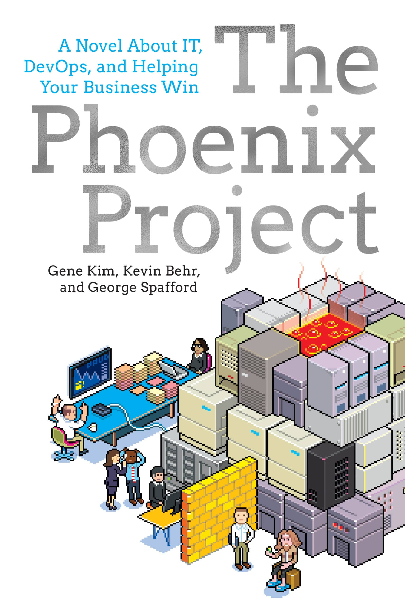
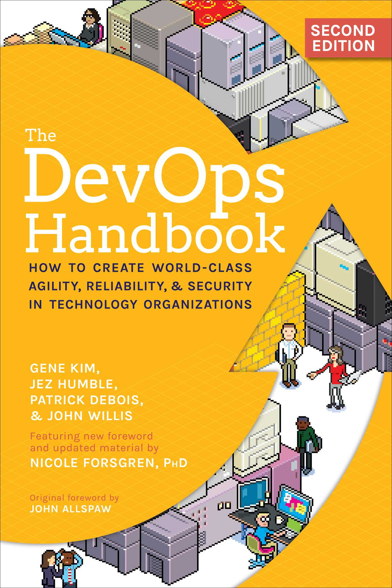
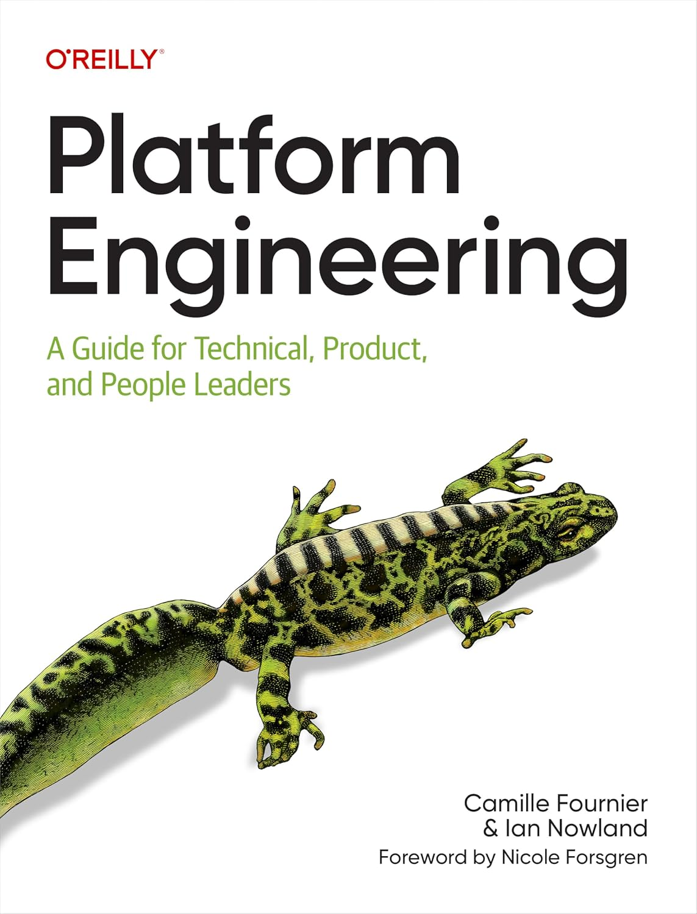
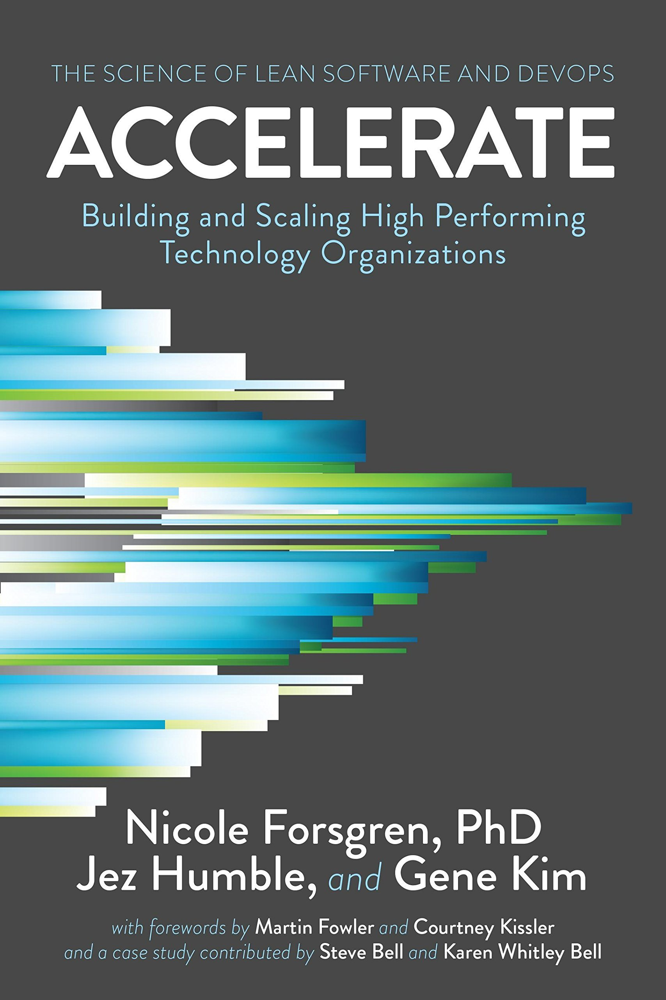
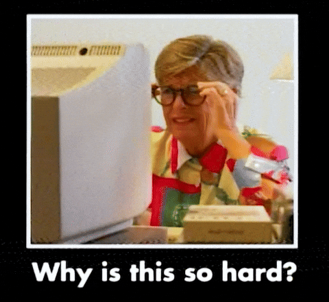

How the lower layers stay relevant.
Years between delivery teams and the infrastructure underneath.
Your teams, amplified.





“Platform teams should use these to measure their own performance, while application teams should see these metrics exposed by the platform to understand the impact on their work.”dora.dev · Capabilities: Platform engineering · “Measuring impact” · Jan 2026
When a measure becomes a target, it stops being a good measure.
Apply it to the work in progress and the work coming — not to last quarter.
Drawn as the foundation. Or the basement.
Legacy skills plus the new methods, learned on the job.
Findings — pointed at the people who already run the estate.
Helping new cloud engineers and legacy staff new to automation work as one team.
Space to learn, maintain, build.
Use the model as a start. Not a finish line, not a target.